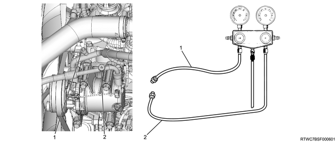

Inspection conditions
Ambient temperature of surroundings about 30 - 35ºC {86 - 95°F}
Engine rpm about 1500 rpm
Air conditioner switch ON
Blower motor HIGH
Temperature setting MAX COOL
Close all doors RECIRC
Normal pressure (reference)
The low pressure side is at about 127 - 245 kPa (1.3 - 2.5 kgf/cm2)
The high pressure side is at about 1373 - 1667 kPa (14.0 - 17.0 kgf/cm2)
Manifold gauge connection
Inlet side for low pressure hose
Outlet side for high pressure hose
AS HFC-134a is employed in the air conditioner system of this vehicle when checking the air conditioner system, make sure to use air conditioner servicing tools, such as manifold gauge and charging hose, that are intended for use with HFC-134a.

Symptom
Insufficient cooling
Both the high- and low-pressure values are low
Low pressure side about 49 - 98 kPa (0.5 - 1.0 kgf/cm2)
High pressure side about 686 - 981 kPa (7.0 - 10 kgf/cm2)
Gas bubbles are continuously observed through the sight glass
The temperature of the air blown out does not decrease
Possible cause
Insufficient refrigerant level due to the refrigerant leakage
Correction
Inspect and repair the refrigerant leakage section
Fill the refrigerant up to the specified level
Symptom
Insufficient cooling
Both the high- and low-pressure values are high
The low pressure side is at about 245 - 294 kPa (2.5 - 3.0 kgf/cm2)
The high pressure side is at about 2256 - 2452 kPa (23 - 25 kgf/cm2)
No gas bubbles are observed through the sight glass even after lowering the engine rpm
The temperature of the air blown out does not decrease
Possible cause
Over-filled refrigerant
Insufficient cooling of the condenser
Correction
Inspect the refrigerant level and fill it up to the specified level
Clean the condenser
Inspect and repair the condenser fan
Symptom
Insufficient cooling
Both the high- and low-pressure values are high
The low pressure side is at about 245 - 294 kPa (2.5 - 3.0 kgf/cm2)
The high pressure side is at about 2256 - 2452 (23 - 25 kgf/cm2)
The pipe at the low pressure side is not cold
Gas bubbles passes through the sight glass
Possible cause
Air entry into the air conditioning cycle due to insufficient vacuuming
Correction
Perform vacuuming thoroughly and fill the refrigerant up to the specified level
Symptom
Insufficient cooling
Both the high- and low-pressure values are high
The low pressure side is at about 294 - 392 kPa (3.0 - 4.0 kgf/cm2)
The high pressure side is at about 1961 - 2452 kPa (20 - 25 kgf/cm2)
Frosting occurs at the low pressure side pipe
Possible cause
The expansion valve is malfunctioning
Correction
Inspect the mounting condition of the thermosensor, and then if no abnormality is found, replace the expansion valve
Symptom
Not cold
The pressure at the low pressure side is too high while the pressure at the high pressure side is too low
The low pressure side is at about 392 - 588 kPa (4.0 - 6.0 kgf/cm2)
The high pressure side is at about 686 - 1079 kPa (7.0 - 11 kgf/cm2)
The high and low pressures balance immediately after turning off the air conditioner
Possible cause
Malfunctioning during compression due to defective compressor
Correction
Replace the compressor
Symptom
Cold only during some time
The pressure at the low pressure side becomes negative at times, or the pressure at the high pressure side also drops, but normal in other instances
Functions properly immediately after the air conditioner starts operating, but the pressure at the low pressure side indicates a negative pressure after a while
The pressure at the low pressure side is negative - approx. 127 kPa(1.3 kgf/cm2)
The high pressure side about 588 - 1765 kPa (6.0 - 18 kgf/cm2)
Possible cause
The moisture freezes at the expansion valve as moisture entered the air conditioning cycle, thus blocking the cycle at times, but melts and returns to normal at other times
Correction
Replace the expansion valve
Replace the receiver dryer and the compressor oil
Perform vacuuming thoroughly and fill the refrigerant up to the specified level
Symptom
Cold only during some time
The pressure at the low pressure side becomes negative and the pressure at the high pressure side is also low The pressure at the low pressure side is negative
The high pressure side is at about 490 - 588 kPa (5.0 - 6.0 kgf/cm2)
Frosting occurs at the receiver dryer or the front and rear piping joints of the expansion valve
There is a large temperature difference between the IN and OUT sides of the defective section
Possible cause
The cycle is blocked due to freezing of moisture or presence of foreign substances
The cycle is blocked due to defective thermosensor of the expansion valve
If the cycle is completely clogged, a negative pressure value appears immediately, whereas the pressure drops gradually to a negative value if it is slightly clogged
Action
When moisture enters the cycle, replace the receiver dryer and the compressor oil, and fill the refrigerant up to the specified level Replace the expansion valve if the thermosensor is defective